TrackBack新手指南(编译)
TrackBack ping:在这种情况下，一个ping就是一条从一个web服务器发送到另一个服务器的短消息(a small message)。
“A Beginner's Guide to TrackBack”一文，对在MT中如何使用TrackBack做了详细地说明，下面就是学习笔记。
什么是TrackBack?
简单说来，TrackBack被设计用来提供一种方法以实现网站之间的互相通告：它是一种方法，能让甲对乙说（甲、乙指两个人，下同），“这篇文章可能是你感兴趣的”。要实现这个动作，甲向乙发送一个TrackBack ping即可。
TrackBack ping:在这种情况下，一个ping就是一条从一个web服务器发送到另一个服务器的短消息(a small message)。
历史
TrackBack在2002年秋第一次以开放规范的形式发布。MT2.2作为一种协议和一项功能对其进行了实现，这是TrackBack的第一个实现。由于只有众多的站点都支持TrackBack，它的真正价值才能得以体现，所以TrackBack从一开始就被设计为一个开放系统：一个其它的blog工具能很简单地实现的开放系统。
截止目前，已有下列工具支持TrackBack:
- Movable Type
- Bloxsom
- Blojsom
- Nucleus
- B2
- Radio
- TrackBack standalone Tool
如何使用TrackBack
TrackBack的使用依赖于具体的blog/trackback工具。下面主要针对MT的TrackBack使用。
小书签(bookmarklet)
在MT中使用TrackBack的最简单的方法，是借助小书签，它利用其自动发现功能可以从你正在阅读的当前页面中找到一组可进行TrackBack的文章链接。（自动发现意味着你无需做任何相关的工作，因为系统会替你完成）。如果你还没有在MT中设置过小书签，则：
- 登录MT
- 点击“设置小书签”(Set Up Bookmarklets)
- 配置小书签的显示
注意：一定要确保选中了”TrackBack items”选项，因为这是神奇的自动发现功能的开关。
通过点击下列选项前的框，来选择你想在小书签中显示的内容。然后点击“创建”(create)。
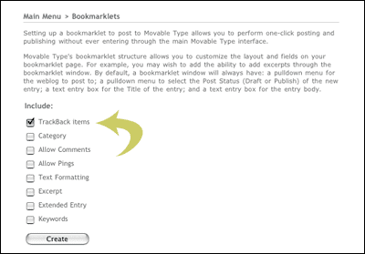
- 安装小书签
将“Post to MT Weblog”链接用鼠标拖到”链接”工具栏（或是者收藏夹里中），它的标题就是“Post to MT Weblog”。（对IE用户来说，还可以把一个”MT It!”加入右键菜单，对当前的页面点击右键时选中此菜单项，也能实现小书签的功能）.
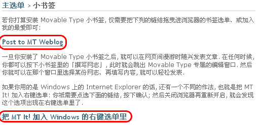
在MT的某些汉化版本中，需要将$MTHOME/lib/MT/L10N/zh_cn.pm做如下修改：'Post to MT Weblog' => '',
改为
'Post to MT Weblog' => 'Post to MT Weblog',
，否则看不到这个链接。
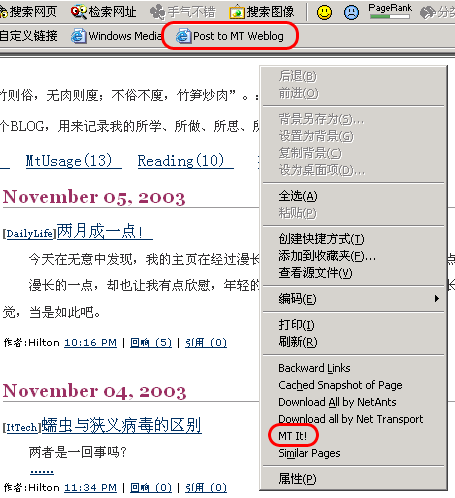 当你阅读其它blog上感兴趣的文章时，点击“Post to MT Weblog”，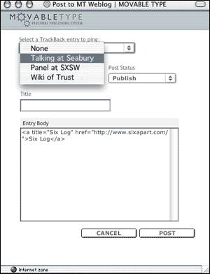如果当前页面中可以TrackBack的文章，它的标题将会自动加入到一个下拉列表中供选择来ping(如果只有一个满足要求的文章，则会用checkbox选项代替的下拉列表)。页面上显示其它元素，都是你在前面配置时选中的。如果那时所有项都选择了，则页面跟正常的”新增文章”非常相似。相关的项都输入完后，点击“保存”（post），则在重建立文章以后，系统会自动ping你从下拉列表中选中的那篇文章。
这儿有一个操作
演示录像（9M大小），是mov格式，需要apple的QuickTime播放器播放。
通过文章编辑表单来TrackBack ping
如果你不想用小书签，仍可以在MT中使用TrackBack ping功能，只是不是那么简单而已。这时，需要找到被ping的目标文章的TrackBack Ping URL。下面描述一下如何一步步的操作。注意：TrackBack Ping Url不是文章的永久链接，而是另外一个链接。
- 找到你感兴趣的文章
这是你的评论对象，也将是你的文章发送TrackBack Ping到的目标对象。如果这个目标文章，接收“TrackBack Ping”，则会自动显示一个”TrackBack”链接，紧挨着“Comments”链接。
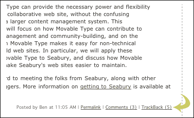 - 找到TrackBack Ping Url
点击上述”TrackBack”链接，页面上会显示此文章的”TrackBack Ping URL”，接下来是一些收到的“TrackBack ping”。复制这个”TrackBack Ping URL”。
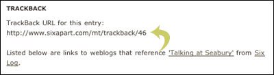
- 登录到你的MT
- 选择一个BLOG
- 点击”新增文章“(New Entry)
- 将刚才复制的内容粘贴到“Urls to ping”输入框中。
如果看不到这个输入框，则点击右下角的”Customize the display of this page “链接来修改你的编辑页面显示。
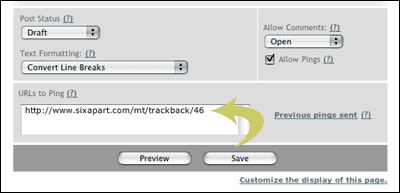 - 编辑文章内容，点击保存按钮
当文章被创建以后，接着显示”Ping...”窗口。此时，MT自动发送”TrackBack Ping”去通知目标文件。
利用”自动发现“功能来发送”TrackBack Ping”
在MT中，最后一种使用”TrackBack Ping”的方法，是在你的blog设置中打开“自动发现(TrackBack auto-discovery,也有人译为自动挖掘)”选项。
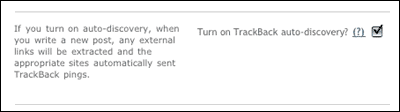
当此选项打开后，MT利用自动发现在功能分析你的文章中的链接所对应的页面，是否接收“TrackBack Ping”，如果接收，则自动从你的文章发送一个”TrackBack Ping”到那个页面。此时，你不需要在”Urls to Ping”输入框中输入内容，也不需要用小书签来查找可ping的链接。
协议
TrackBack是一个基于REST的点对点(peer-to-peer)通信和网站间通告的架构。协议基于”推送(Push)”的原理，而不是“拉取(pull)”：如果你想和其它站点分享信息，你要初始化连接，而不是等待其它站点发现你(和你的信息)。借助TrackBack，站点可以交流相关资源。例如，如果甲想通知乙他写了一些有意思的/想关的/震撼性的东东，甲发送一个TrackBack ping给乙。这完成了两件事：
- 乙能自动列出那些引用他的某篇文章的网站，到他网站的访问者能读到网络上所有相关的文章，包括甲的文章。网页机器人也能访问这些信息，从而能得站点间的联系图。
- ping在他的文章和你的文章间提供了一种稳固的、直接的链接，而不是那种依赖于外部行为（某人点击那个连接）的非直接连接(如反向连接referrer)。
TrackBack协议对任何blog工具都是开放的，具体规范参见
http://www.movabletype.org/docs/mttrackback.html, 或
我的翻译.
目前的应用
远程评论
目前，TrackBack主要被用作一个远程评论系统：如果我在我的blog上发表了一篇文章来评价你在你的blog上的文章，我的blog工具会通报给你的blog工具以通知你此事。接着你的blog将显示我的文章的摘录部分，并提供了一个回到我的文章的链接。这使那些到你的网站的访问者知道其他人是如何评价你的文章的－－换句话说，就是评论(comment)一样，只是这评论是在我的网站而不是在你的网站上，而在以前我只是在你的文章后留言评论。这让我能控制我的文章。如果我想修改一个打字错误，或者改变一些措词，于是我就可以做到。如果我在你的站点上留言，我没有权限来修改那些文字。换句话说，TrackBack使你更能控制你的内容。
TrackBack ping的威力，在于它创建了你我站间的一个直接引用。这个引用可以用来建立一个分布式的交谈(conversation)。例如，另外一个blogger(女)发布文章阐述了对我的文章的想法，并发送给我一个TrackBack ping.这个交谈(conversation)可从你最初的文章，追踪到我这儿，再到她那儿。这个线路可以通过TrackBack的元数据自动画出来。请看这个线路：
http://www.sixapart.com/safari-thread.html,它开始的文章是
http://www.sixapart.com/log/2003/01/initial_reactio.shtml.
内容聚合
虽然到目前TrackBack最流行的应用，是以远程评论的形式，一个更令人兴奋的使用已经开始出现了：利用TrackBack来将相关的内容聚合到一个基于主题的仓库（repository）中。这其实是TrackBack最初的设计用途：远程评论来源于一个主题仓库的特殊，即此时的“主题”是一篇blog文章。
内容聚合站点收集关于某个主题的内容。如果你曾试图查找关于某个特定题目的blog文章，这非常不可能，除非是新闻故事或新近发生的事。如果你的题目是关于80年代的音乐，你要花费更多艰苦的时间来找到所有的关于那个主题的blog文章。这到了TrackBack显示身手的时候：通过建立一个关于80年代音乐的文章仓库，其它的内容作者可以利用TrackBack自动ping这个仓库。任何查找关于80年代音乐的文章的人，可到这个页面，找到那些指向这个站点的文章。
这些内容仓库可以集中存放(如Internet Topic Exchange),也可以分布式存放。以MT为例，你可以设置任何blog分类来接收TrackBack ping,这使你成为你感兴趣的某个主题的信息源。
- 登录MT
- 选择blog，用以存放允许TrackBack的分类
- 点击“分类(categories)”
- 编辑类别属性
点击某类别的“编辑类别属性(edit category attribute)”连接
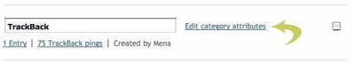 - 设置接收TrackBack ping 为on.
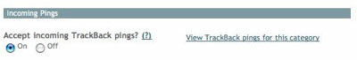 - 在模板中增加显示收到的ping的代码
<MTPings category="TrackBack" lastn="15">
<a href="<$MTPingURL$>"><$MTPingTitle$></a><br />
</MTPings>
在这个例子中，TrackBack字符串是一个分类的名字，实际应用中以真实的分类名替换它。 - 公开发布分类的TrackBack URL
是为了让更多的人向这个类另发送ping.这个URL你可以从类编辑页面得到。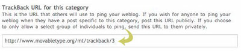
一些以这种方式使用TrackBack的站点：
将来可能的应用
内容控制
随着时间的流失，你在你的blog上的花费的时间越来越多，你的blog的内容也越来越充实，你可能想控制所有你在其它的blog或系统中发布的内容。例如，如果你曾就某人的文章在其站点上发布过自己的想法，他想将这些想法发布到自己的blog中来，于是你可就可控制它们了。或者，如果你在amazon.com上发表过评述(review)，你可能想把这个评述组织到你的自己的站点中来。TrackBack有助于做到这些。有个例子，Matt Haughey的Posted Elsewhere工具条(http://a.wholelottanothing.org/)，将他在别外写的内容聚合起来。
反过来，TrackBack可以工作：不是在别人的站点上发表文章，而是作者在自己的blog上发表文章，然后将TrackBack ping发往其它站点。例如，如果amazon.com评述可以接收TrackBack ping,你可信息控制在自己的网站上，让amazon.com连到你这儿。
我的一点想法
一个页面，要想提高自己在google的pagerank值，关键在于能得到来自高pagerank值的页面的链接。一般说来，这种连接的建立，低值的页面只能被动的接收，而blog工具中的comments和trackback，提供了一种在别人的页面上主动建立连接的方法。如果google没有针对这种情况调整算法，这将成为一种快速提升pagerank的途径。尤其是“自动发现”功能，能自动找出链接，检查相关的页面是否接收trackback ping,将会更加剧对这种手段的利用。
真的是这样的吗？
参考资料
A Beginner's Guide to TrackBack
http://www.movabletype.org/trackback/beginners/
Posted by Hilton at November 6, 2003 04:49 PM
| TrackBack
五：Google的前1,000项搜索结果
一般说来，网站排名因素包括网页标题(META TITLE)，网页正文中的关键词密度，锚文本(也叫链接文本，指链接或超链的文本内容)和PageRank所决定的。
请记住：单靠PageRank是无法使你获得比较理想的网站排名的。PageRank只是网站排名算法中的一个乘积因子，若你网站的其它排名因子的得分是零，就算你的PageRank是两百亿，最后的得分还是零。但这并不是说PageRank就毫无价值，而是在什么情况下PageRank才能完全发挥其功力。
如果在Google上进行广泛搜索，看起来好象有几千个结果，但实际显示最多前1,000项结果。例如对“car rental”，显示搜索结果为5,110,000，但实际显示结果只有826个。而且用时只有0.81秒。试想一下，0.84秒的时间就可以计算这五百万搜索结果的每个排名因子得分，然后给出最终我们所看到的网站排名结果吗？
答案就在于：搜索引擎选取与查询条件最相关的那些网页形成一个子集来加速搜索的速度。例如：假设子集中包含2,000个元素，搜索引擎所做的就是使用排名因子中的两到三个因素对整个数据库进行查询，找到针对这两三个排名因子得分较高的前2,000个网页。(请记住，虽然可能有五百多万搜索结果，但最终实际显示的1,000项搜索结果却是从这个2,000页的子集中提炼出来的。) 然后搜索引擎再把所有排名因子整合进这2,000项搜索结果组成的子集中并进行相应的网站排名。由于按相性进行排序，子集中越靠后的搜索结果(不是指网页)相关性(质量)也就越低，所以搜索引擎只向用户显示与查询条件最相关的前1,000项搜索结果。
请注意，在搜索引擎生成这2,000项网页的子集中我们强调了“相关性”这个词。即搜索引擎找寻的是与查询条件有共同主题的网页。如果这时候我们把PageRank考虑进去，就很可能得到一些PageRank很高但主题只是略微相关的一些搜索结果。显然这有违搜索引擎为用户提供最为相关和精准的搜索结果的原则。
一旦理解了为什么会如此，就说明了为什么你应当首先努力在“页面”因子和锚文本上下足工夫，最后才是PageRank。所以关键在于：
你必须首先在页面因素和/或锚文本上下足工夫，使这些排名因子能够获得足够的得分，从而使你的网站能够按目标关键词跻身于这2,000项搜索结果的子集中，否则PageRank再高也与事无补。